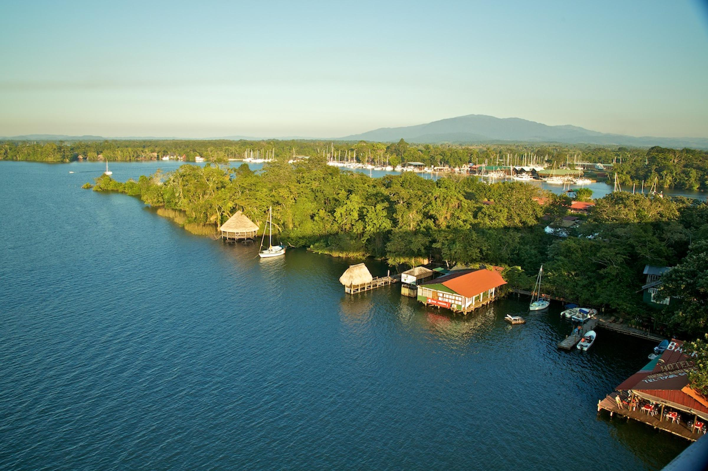
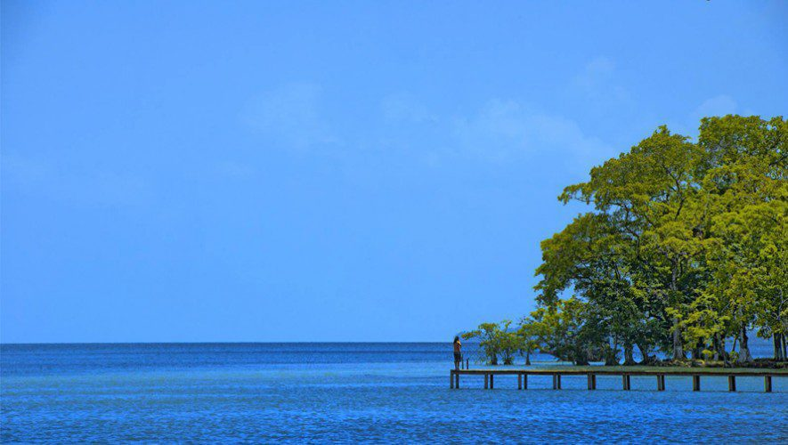
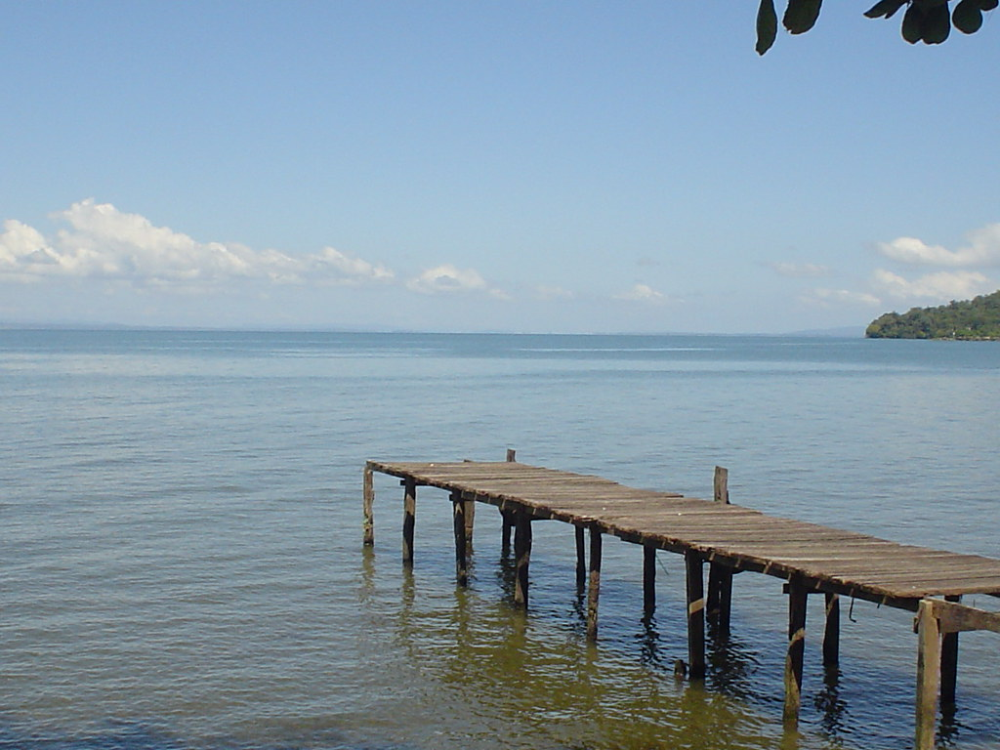

La historia del Lago de Izabal está relacionada con las culturas indígenas, la colonización española, el comercio y la defensa del territorio guatemalteco.
El Lago de Izabal es especial porque es el lago más grande de Guatemala y uno de los lugares naturales más importantes del país. Destaca por su enorme biodiversidad, ya que alberga peces, aves y especies únicas que viven en sus aguas y alrededores. Además, conecta con el Río Dulce, formando un ecosistema lleno de manglares, selva tropical y paisajes impresionantes.
Paseo en lancha, visitar el castillo de San Felipe, fotografías


